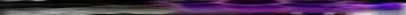

Carbon, 13, 18, 24, 2 becomes 3
In 1973, Djuro Koruga, who studied both
biological and technical sciences, began to concentrate all his scientific
activities on "understanding the fundamental relation of the ...with
the evolution of the creation of Man and machine and some kind of transformation
of Man into machine from the energetic-informational aspect being (his)
main preoccupation." In 1978 Koruga had a vivid dream,
which he did not fully understand until 13 years later and the discovery
of C60. What he did realize, however, was that dream had given him what
he had been searching for: "The key to the solution of the fundamental
principle of the Man-machine system, or biological
life as we know it and future "artificial life,"
was carbon." There were 5 numbers stated at the end of the dream which
meant nothing to him at the time, but had significance after the discovery
of C60. These numbers when added together equal 60.
Koruga wrote a paper based on his dream experience for the 1979 9th World
Congress of Aesthetics. The paper which he called, "Creativity as an
experience of the beautiful and sublime," was based on three things
which became "crystal clear" based on his dream: "carbon,
ancient Egypt and axis of 5-fold symmetry will
determine the fundamental principles and future of machines -- "artificial
life."